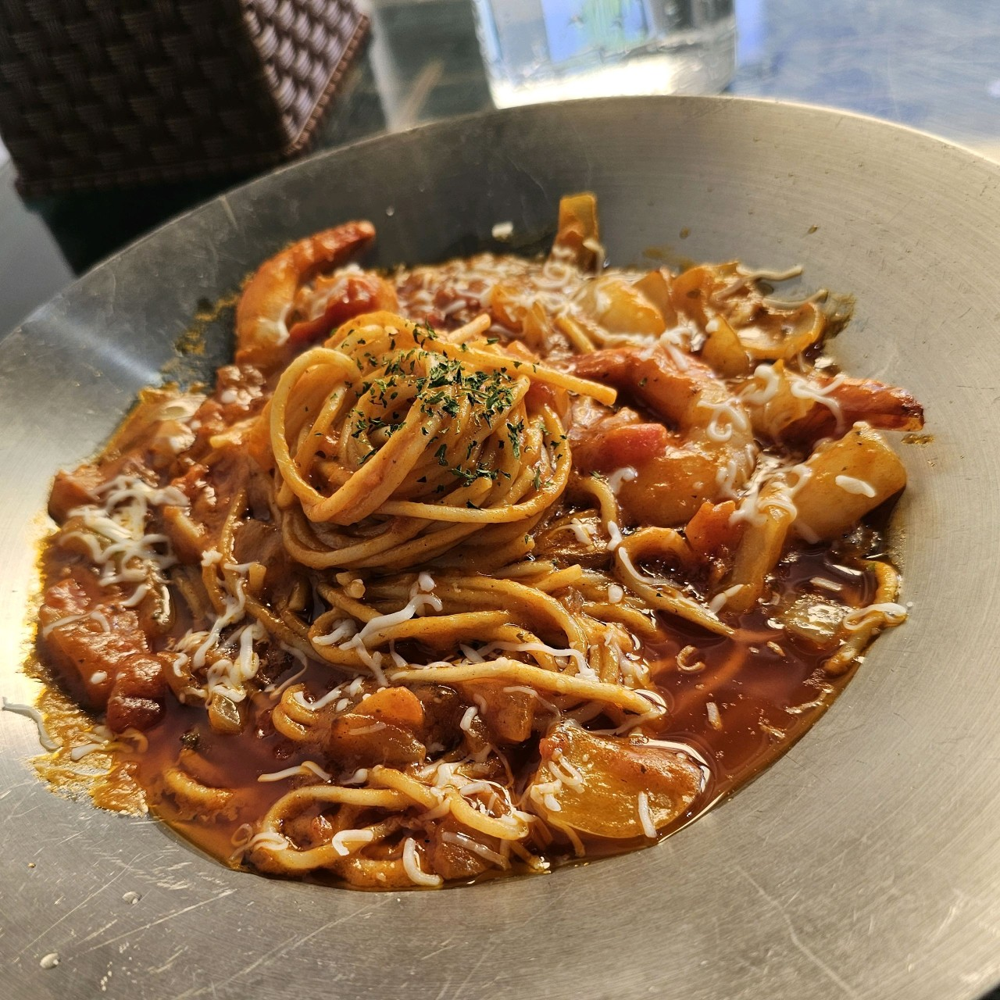

경상북도의 맛집
사진을 누르면 네이버 페이지로 이동합니다.
예천군 맛집
- 용궁단골식당본점
- 박달식당

- 예천한우식육식당
상주시 맛집
- 상주축산농협 명실상감한우프라자
- 고려분식
- 용궁단골식당 상주점
안동시 맛집
영양군 맛집
- 달식당

- 새봄식당
- 희야돌곱창식당
의성군 맛집
- 의성마늘소 덕향
- 봉양한우마실작목회

- 천진중화요리
영덕군 맛집
김천시 맛집
구미시 맛집
- 평양아바이순대국밥
- 김태주선산곱창 구미점
- 큰나무집궁중약백숙 구미점
포항시 맛집
영천시 맛집
- 삼송꾼만두 영천본점
- 와이식당

- 강남한우식육식당
경주시 맛집